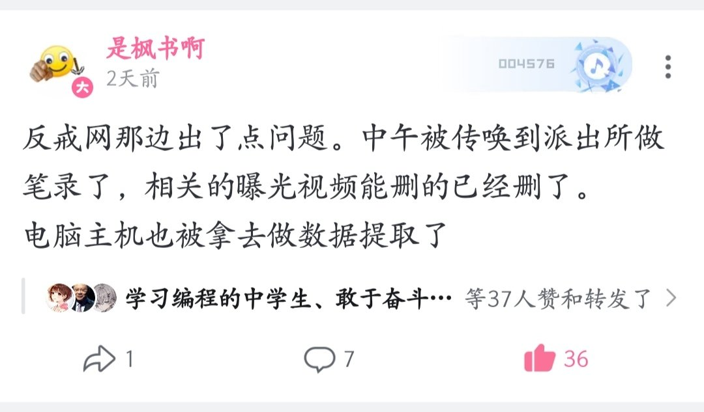

牧鸢
@LwrDHYyuxR22499
@shifengshua0717 不挺好的我巴不得没人管我
虽然我也得到这个结果了

枫书
@shifengshua0717
我是真完了，原本就和家里人关系冷淡，家长这个后勤也总是迟到。现在被警察找上门一次后，和家里人的关系已经废了。老爸把我当空气，这真绷不住了。
以现在的情形来看，我老爸大概是把希望寄托给小我11岁的妹妹了，总之我是真tm完了。 https://t.co/ffouxWxCpW https://t.co/chnptoYYib